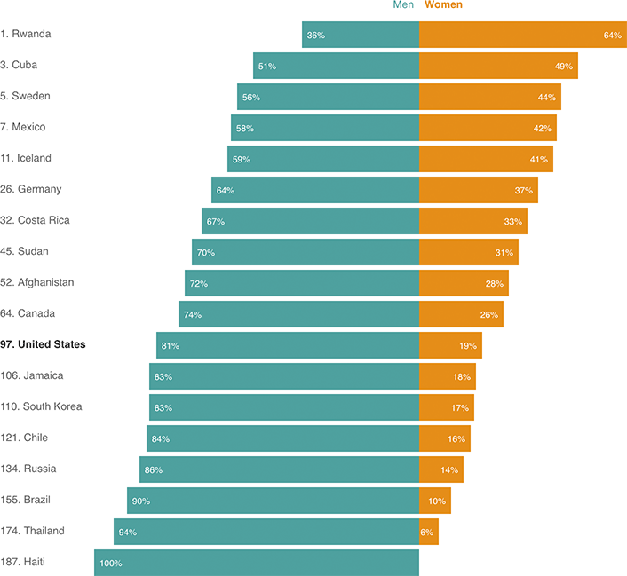

The U.S. Ranks 97th On Women’s Legislative Representation
Women make up more than half of the U.S. population, but they make up only 19 percent of the U.S. House of Representatives. That puts the U.S. at 97th out of 187 countries in terms of women’s legislative representation. The chart below shows selected countries, for some context around where the U.S. stands.

Notes
— Data is based on the number of occupied seats in a country’s national legislature. If the legislature has multiple houses, the “lower” house is used.
— U.S. totals do not include two vacant seats in the House of Representatives.